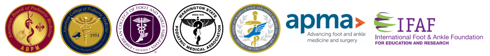

Craig Clifford
DPM, MHA, FACFAS, FACPM
board certified in podiatric medicine
board certified in Foot Surgery, Reconstructive Rearfoot, and Ankle Surgery

Dr. Clifford completed his podiatric medical and surgical residency training at the Franciscan Foot and Ankle Institute, in Federal Way, WA. After residency he served as the Director of Research, and went on to become the Director of Residency Training with the Franciscan Foot and Ankle Institute. While teaching, he was honored to be awarded Clinician of the Year, Instructor of the Year, and Outstanding Teaching Award over multiple years. Dr. Clifford was also the recipient of the Washington State Podiatric Medical Association Physician of the Year Award in 2020.
After over a decade of performing, teaching, and developing new surgical techniques, Dr. Clifford has seen firsthand that most foot and ankle surgery can be avoided with appropriate conservative care. In 2022 he left his successful surgical practice with the goal of providing patients with better access to cutting edge conservative care.
Dr. Clifford currently practices at Northwest Foot & Ankle Center, with locations in Silverdale and Puyallup, Washington. He is Board Certified by the American Board of Foot and Ankle Surgery, and Board Certified by the American Board of Podiatric Medicine. He is on the Board of Directors for the International Foot and Ankle Foundation, and has served on Peer Review and Editorial Boards of multiple medical journals. He is actively involved with the Yucatan Children’s Project, where he volunteers his time and skills to perform deformity correction surgeries on underserved children in Mexico.
Silverdale, WA 98383
Puyallup, WA 98374